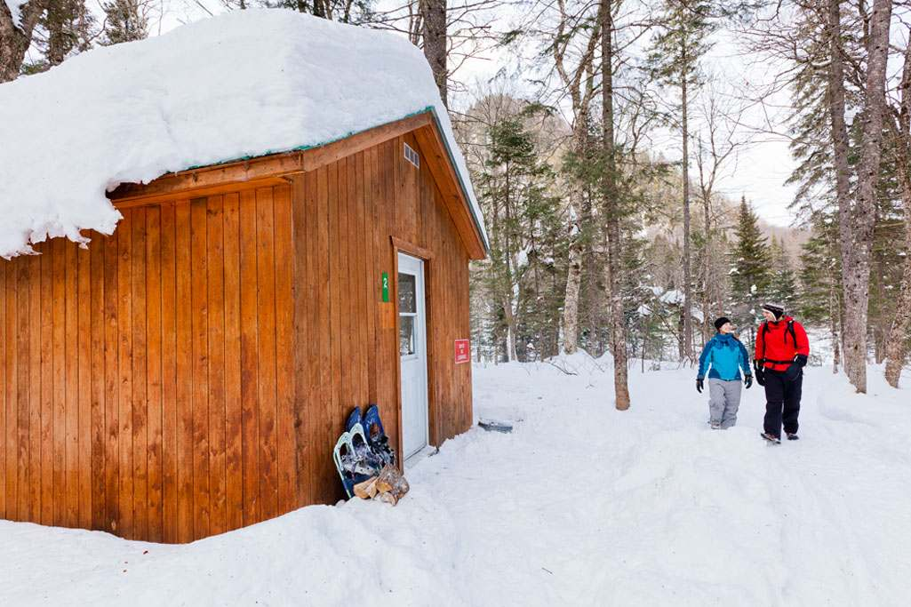

Before you go
A little planning.
A lot to look forward to.
Four nights away. Five memorable days. Use this checklist to get the important details in place before the festive road trip.
Your overnight plan
Sleep well, travel well.
24 Dec: Montréal
25 & 26 Dec: Québec City
27 Dec: Ottawa
Accommodation bookings are not included in this proposed itinerary. Check late check-in arrangements for Ottawa after the evening event.

The finishing touches
Your pre-trip checklist
Tick items off as you prepare. Your selections stay in this page while it is open.
Winter access can change. Montmorency Falls and Jacques-Cartier National Park visits are subject to conditions. The itinerary does not assume markets or attractions will be open on holidays without confirmation.